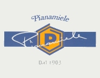
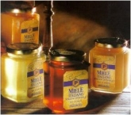
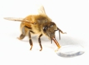
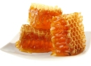

ビジネス
|
Apicoltura Pianaは、年間40百キロの蜂蜜を生産するイタリア市場のトップに位置しています。 同社はほぼ一世紀前に設立され、Ligusticaレースの繁殖の女王のために、そして蜂の開発を維持することに大きな貢献をしたことでよく知られています。 Apicoltura Pianaは、その製品が有益な性質をそのまま維持しなければならないという事実の意識をもって、菜食主義者や薬草業者に製品を生産し、配布することを開始しました。 その後、Pianaは工業的に食品や製薬会社などの他の顧客に製品を展開しました。 |
|
|---|---|
|  |
80年代、Apicoltura PianaはGDとDOに入り、最初の90年代にはHo.Re.Caフィールドに達し、単回用量容器を生産し、顧客数を大幅に増やしました。 GDとDO事業も増加し、ブランドPIANAMIELEが設立され、他の特定のブランドも拡大しました。 |
|
それにもかかわらず、繁殖用の女王の活動は常に維持されていた。そして、これは許されていて、他のイタリアの蜂の飼い主との接触をまだ許可します。 Apicoltura Pianaは、蜂蜜の生産に関連するすべての分野で優れた経験と専門知識を提供しているため、信頼できるパートナーです。 |
|
|  |
Apicoltura Pianaの強みの1つは、様々なハニーとその小売用フォーマットです。
すべての慎重に選択され、制御され、この分野で最も広いオファーの1つを代表するイタリアの蜂蜜、アルゼンチン、ハンガリーの蜂蜜の10種類。
|
時間の品質定数
 
品質管理はApicoltura Pianaにとって重要なポイントです。
Apicoltura Pianaには、すべての製品の試食を含む化学物理的および官能検査を行う独自の検査室があります。原材料から最終製品までのすべてのものがテストされ、味わいがとられています。 Apicoltura Pianaは、栄養補助食品のモニタリングに特化して認定された外部検査機関によって継続的に監視されています。原材料、包装、製品の起源が完全に管理され、追跡されているとは言えません。